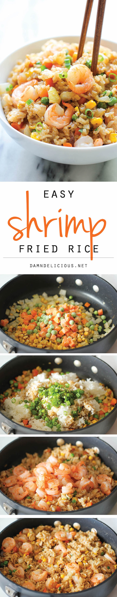

Shrimp Fried Rice

Description
Easy Chinese Takeout style Fried Rice at home.
Ingredients
- 3 tablespoons soy sauce
- 1 tablespoons sesame oil
- ½ teaspoon ginger powder
- ½ teaspoon white pepper
- 2 tablespoons olive oil
- 1 pound medium shrimp, peeled and deveined
- Kosher salt and freshly ground black pepper, to taste
- 2 cloves garlic, minced
- 1 onion, diced
- 2 carrots, peeled and grated
- 2 carrots, peeled and grated
- ½ cup frozen peas
- 3 cups cooked rice
- 2 green onions, sliced
Steps
- In a small bowl, whisk together soy sauce, sesame oil, ginger powder and white pepper; set aside.
- Heat olive oil in a large skillet or wok over medium high heat. Add shrimp, and cook, stirring occasionally, until pink, about 2-3 minutes; season with salt and pepper, to taste; set aside.
- Add garlic and onion to the skillet, and cook, stirring often, until onions have become translucent, about 3-4 minutes. Stir in carrots, corn and peas, and cook, stirring constantly, until vegetables are tender, about 3-4 minutes.
- Stir in rice, green onions and soy sauce mixture. Cook, stirring constantly, until heated through, about 2 minutes. Stir in shrimp.
- Serve immediately.